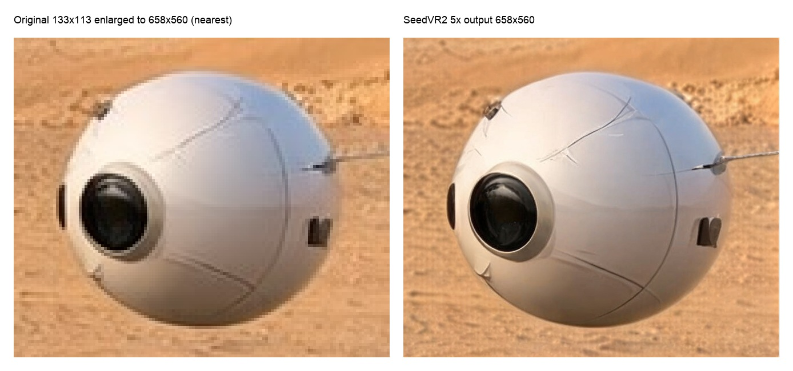

Image And Video Upscaling¶
MLX-Gen routes image and video restoration through mlxgen upscale, which hosts two model
families. Select one with --model.
- SeedVR2 is a diffusion restoration/upscaling model: it can increase pixel dimensions while
reconstructing detail and smoothing low-resolution or compressed artifacts. Handles
seedvr2-3b,seedvr2-7b,seedvr2-7b-sharp, official ByteDance repos, and AbstractFramework packages. - SwiftVR is a one-step restorer built on Wan2.2-TI2V-5B. It restores at the source resolution
only - it does not scale - and is roughly 40x faster than SeedVR2 on the same clip. Handles
swiftvrandswiftvr-5b. See SwiftVR One-Step Restoration.
Neither family requires a text prompt.
| SeedVR2 | SwiftVR | |
|---|---|---|
| Images | yes | no |
| Video | yes | yes |
| Scaling | yes | source resolution only (1x) |
| Quantization | q8 / q4 packages | none (bf16) |
Both families declare what they accept, so you can check a route before starting a run:
mlxgen capabilities --model swiftvr
mlxgen capabilities --family seedvr2
The restoration array reports accepted media, input counts, scale factors, the clip-length
contract, and quantization support for every route. See
Restoration Commands for the field reference and the Python route
names.
The older mflux-upscale-seedvr2 entry point remains available for compatibility. New examples use
mlxgen upscale.
Video Restoration¶
Video restoration uses the same command with --video-path instead of --image-path. MLX-Gen
preserves the source clip FPS by default, trims temporary SeedVR2 padding back to the requested
clip length, and preserves the matching source audio segment by default when the source clip has
audio. If MLX-Gen cannot prove that copied audio is still aligned safely, the run fails instead of
publishing a silent output unexpectedly. Use --drop-audio only when you intentionally want a
silent restored MP4.
The public safe video profile is conservative by design:
- if you omit
--resolution, video restore defaults to1x; - MLX-Gen enables
--low-ramautomatically for video inputs; --mlx-cache-limit-gb 8is an MLX cache setting, not a total process-memory cap;- the CLI uses sequential temporal chunking for video instead of the bounded in-memory direct path;
- enlarged video output profiles are rejected in safe mode unless you pass
--force-unsafe-video-memory.
--vae-tiling is for image runs only and is rejected on video input.
Audio Copy-Through¶
SeedVR2 video restore uses one shared post-write audio path for bounded and streamed outputs.
audio_presentrecords whether the source clip had audio.audio_copiedrecords whether MLX-Gen kept the matching source segment.audio_copy_moderecords the successful mux path.audio_copy_reasonrecords why a saved output has no copied audio, for exampledrop_audio_requested,no_source_audio, orin_memory_output.
The shipped route uses ffmpeg for sync-safe muxing. If ffmpeg is not available on PATH, or if
the written MP4 duration no longer matches the bounded source window closely enough, MLX-Gen fails
the run instead of silently dropping audio. Pass --drop-audio when a silent MP4 is the intended
output.
Accepted published proof bundle:
- Air France source excerpt
- Air France copied-audio output
- Air France stream report
- Air France audio-copy report
- Air France command log
Useful option:
--drop-audio: opt out of the default audio-preservation contract and publish a silent restored MP4 intentionally.
Reader-First Validation Rule¶
MLX-Gen now treats five contiguous seconds as the minimum public-quality proof for SeedVR2 video. Sub-second clips are still useful for local diagnostics, but they are not enough to judge cadence, time dilation, or motion distortion. See ADR 0005.
For the checked-in Eiffel archival proof, the accepted reader-first slice is:
- source video:
Panorama of the Eiffel Tower in 1900 Thomas Edison Vintage Video.mp4 - clip window:
70.0sto75.0s - source geometry:
320x240 - source duration under test:
149frames at29.97 fps(4.972s)
Set the source file path once:
SOURCE_VIDEO="Panorama of the Eiffel Tower in 1900 Thomas Edison Vintage Video.mp4"
Run the accepted safe bounded 1x proof with the official source checkpoints:
mlxgen upscale \
--model ByteDance-Seed/SeedVR2-3B \
--video-path "$SOURCE_VIDEO" \
--start-seconds 70 \
--max-frames 149 \
--resolution 1x \
--softness 0.0 \
--color-correction wavelet \
--temporal-chunk-size 29 \
--temporal-chunk-overlap 8 \
--low-ram \
--mlx-cache-limit-gb 8 \
--metadata \
--output eiffel_70s_149f_3b_chunk29_overlap8_wavelet_1x_after_causal_slicing.mp4
mlxgen upscale \
--model ByteDance-Seed/SeedVR2-7B \
--video-path "$SOURCE_VIDEO" \
--start-seconds 70 \
--max-frames 149 \
--resolution 1x \
--softness 0.0 \
--color-correction wavelet \
--temporal-chunk-size 29 \
--temporal-chunk-overlap 8 \
--low-ram \
--mlx-cache-limit-gb 8 \
--metadata \
--output eiffel_70s_149f_7b_chunk29_overlap8_wavelet_1x_after_causal_slicing.mp4
Run the accepted enlarged 2x comparison only after the 1x slice looks right on the same clip:
mlxgen upscale \
--model ByteDance-Seed/SeedVR2-3B \
--video-path "$SOURCE_VIDEO" \
--start-seconds 70 \
--max-frames 149 \
--resolution 2x \
--softness 0.0 \
--color-correction wavelet \
--temporal-chunk-size 29 \
--temporal-chunk-overlap 8 \
--low-ram \
--mlx-cache-limit-gb 8 \
--force-unsafe-video-memory \
--metadata \
--output eiffel_70s_149f_3b_chunk29_overlap8_wavelet_2x_after_causal_slicing.mp4
mlxgen upscale \
--model ByteDance-Seed/SeedVR2-7B \
--video-path "$SOURCE_VIDEO" \
--start-seconds 70 \
--max-frames 149 \
--resolution 2x \
--softness 0.0 \
--color-correction wavelet \
--temporal-chunk-size 29 \
--temporal-chunk-overlap 8 \
--low-ram \
--mlx-cache-limit-gb 8 \
--force-unsafe-video-memory \
--metadata \
--output eiffel_70s_149f_7b_chunk29_overlap8_wavelet_2x_after_causal_slicing.mp4
29/8 means:
- restore
29source frames per chunk; - reuse
8source frames as context between adjacent chunks; - do not crossfade output frames together.
This matters because the overlap is there to keep the model temporally grounded, not to blend two different restored outputs into one display frame.
Color-Correction Labels¶
The CLI values stay short, but the meanings are:
| CLI value | Reader-first label | What it does |
|---|---|---|
wavelet |
Wavelet tone reconstruction | Restores detail, then reuses the source clip's broad low-frequency tone structure. This is the current default and the accepted Eiffel proof mode. |
lab |
LAB tone matching | Matches the restored output back toward the source in perceptual LAB space. Usually a bit more conservative than wavelet. |
off |
Raw model output | Leaves the restored output untouched by tone/color post-processing. |
On monochrome archival footage, these are really tone-matching choices more than ordinary color choices.
Accepted Proof Bundle¶
Reader-first report and reproduction files:
Safe 1x bounded proof:
- 3B 1x restored video
- 7B 1x restored video
- 1x comparison video
- 1x contact sheet
- 1x mid-clip motion strip
- 1x tail motion strip
- 1x metrics JSON
{kind=link}
{kind=link}
{kind=link}
Enlarged 2x bounded proof:
- 3B 2x restored video
- 7B 2x restored video
- 2x comparison video
- 2x contact sheet
- 2x moving-crowd motion strip
- 2x tail motion strip
- 2x crowd detail crop
- 2x metrics JSON
{kind=link}
{kind=link}
{kind=link}
{kind=link}
Supported Public Proof Profiles¶
Accepted public profiles for this exact archival slice:
- safe bounded
1x 29/8 waveletfor3Band7B - explicit enlarged
2x 29/8 waveletfor3Band7B
Current guidance:
1x 29/8is the default public video proof surface for route correctness, frame integrity, and motion continuity;3B 1x 29/8is crisper on this native archival slice, while7B 1x 29/8is smoother and less drift-prone;2x 29/8is the stronger visual comparison regime on this clip, and7B 2x 29/8result is slightly cleaner and more stable than3B 2x 29/8.
Supporting metrics on the accepted proofs, after downscaling each candidate back to the
original 320x240 source resolution before scoring:
3B 1x 29/8:sharpness_gain 1.5240,contrast_gain 1.1046,temporal_ratio 1.5097,drift_mae 0.056926,heuristic_score 58.657B 1x 29/8:sharpness_gain 1.2258,contrast_gain 1.0682,temporal_ratio 1.2874,drift_mae 0.041031,heuristic_score 60.723B 2x 29/8:sharpness_gain 1.4096,contrast_gain 1.0504,temporal_ratio 1.3493,drift_mae 0.035856,heuristic_score 61.637B 2x 29/8:sharpness_gain 1.4176,contrast_gain 1.0523,temporal_ratio 1.3563,drift_mae 0.033749,heuristic_score 62.57
These metrics are supporting evidence only. The comparison MP4 and motion/crop sheets are the primary quality proof.
Measured on an Apple M5 Max with 128 GB unified memory for the accepted 29/8 proofs:
3B 1x 29/8:generation_time 71.33s,wall_time 74.54s,peak_mlx 14.55 GB,max_rss 27.40 GB7B 1x 29/8:generation_time 107.44s,wall_time 112.93s,peak_mlx 24.54 GB,max_rss 66.18 GB3B 2x 29/8:generation_time 539.03s,wall_time 542.30s,peak_mlx 34.40 GB,max_rss 27.40 GB7B 2x 29/8:generation_time 454.46s,wall_time 460.61s,peak_mlx 44.27 GB,max_rss 66.18 GB
Peak MLX memory and max RSS are different measurements. Peak MLX tracks allocator activity inside MLX. Max RSS tracks the full process footprint seen by the OS.
Practical guidance:
- use
--start-secondsand--max-framesto validate a real five-second slice before longer runs; - start with the safe
1x 29/8profile and--softness 0.0when the goal is archival restoration rather than enlargement; - use
2x 29/8only after the same slice looks correct at1x, because enlarged proof is an explicit unsafe-memory run; - use
waveletfirst, then comparelabandoffonly if tone matching looks wrong on the actual clip; - judge the MP4 and motion-strip output directly instead of trusting one heuristic score;
- prefer visibly degraded, noisy, low-resolution, or compressed footage for restoration proofs;
- treat already-clean high-resolution footage as a harder fit. In local testing, SeedVR2 could over-smooth modern native-resolution clips instead of improving them.
5x Example¶
The included example starts from a 133x113 JPEG and generates a 658x560 PNG with the
published AbstractFramework/seedvr2-3b-8bit package:
mlxgen download --model AbstractFramework/seedvr2-3b-8bit
mlxgen upscale \
--model AbstractFramework/seedvr2-3b-8bit \
--image-path docs/assets/upscaling/seedvr2-5x-source.jpg \
--resolution 5x \
--seed 42 \
--metadata \
--output seedvr2-5x-output.png
The left panel below shows the original source enlarged to the same 658x560 resolution with
nearest-neighbor resizing. The right panel is the SeedVR2 output generated by the command above.

The source and generated output are also included separately:
{kind=link}
{kind=link}
Published Packages¶
For regular 3B use, prefer the reusable AbstractFramework packages:
mlxgen download --model AbstractFramework/seedvr2-3b-8bit
mlxgen download --model AbstractFramework/seedvr2-3b-4bit
Then pass the selected package to mlxgen upscale:
mlxgen upscale \
--model AbstractFramework/seedvr2-3b-8bit \
--image-path input.png \
--resolution 2x \
--seed 42 \
--metadata \
--output input_seedvr2_3b_q8_2x.png
The 3B packages are generated from the official ByteDance-Seed/SeedVR2-3B source model. They use
MLX-Gen's saved-weight layout and are intended for MLX-Gen, not Diffusers or Transformers
from_pretrained() loading. The q8 package is the closest low-memory option to the source path;
the q4 package is smaller and passed the included 5x validation profile.
The 7B section below includes a combined 3B/7B contact sheet using the same source image and 5x
profile for direct comparison across source, q8, and q4 outputs.
SeedVR2 7B¶
The seedvr2-7b and seedvr2-7b-sharp aliases both resolve to the official
ByteDance-Seed/SeedVR2-7B source repository:
mlxgen download --model ByteDance-Seed/SeedVR2-7B
mlxgen upscale \
--model seedvr2-7b \
--image-path input.png \
--resolution 2x \
--seed 42 \
--metadata \
--output input_seedvr2_7b_2x.png
To use the sharper official checkpoint directly:
mlxgen upscale \
--model seedvr2-7b-sharp \
--image-path input.png \
--resolution 2x \
--seed 42 \
--metadata \
--output input_seedvr2_7b_sharp_2x.png
You can prepare reusable local q8/q4 packages from the official 7B source:
mlxgen prepare \
--model ByteDance-Seed/SeedVR2-7B \
--path ./models/seedvr2-7b-8bit \
--quantize 8
mlxgen prepare \
--model ByteDance-Seed/SeedVR2-7B \
--path ./models/seedvr2-7b-4bit \
--quantize 4
The same package layout is used for the AbstractFramework 7B q8/q4 packages:
mlxgen download --model AbstractFramework/seedvr2-7b-8bit
mlxgen download --model AbstractFramework/seedvr2-7b-4bit
Run from a local or downloaded 7B package with the same command:
mlxgen upscale \
--model ./models/seedvr2-7b-8bit \
--image-path input.png \
--resolution 2x \
--seed 42 \
--metadata \
--output input_seedvr2_7b_q8_2x.png
The 7B source, q8 package, and q4 package passed the same checked-in 5x profile used for 3B.
The sheet below stacks the 3B and 7B results so you can compare detail reconstruction directly:

SwiftVR One-Step Restoration¶
swiftvr restores video in a single forward pass per chunk rather than a diffusion trajectory. It
is the fast route: on the comparison below it runs about 40x faster than SeedVR2 at roughly a fifth
of the peak memory.
mlxgen upscale --model swiftvr --video-path clip.mp4 --resolution 1x --output restored.mp4
Route constraints, all fail-closed rather than approximated:
- Source resolution only. SwiftVR reaches other sizes upstream by bilinear pre-upsampling of the
degraded input, which MLX-Gen has not matched or measured. Any
--resolutionother than1xis refused with a message pointing at SeedVR2 rather than silently approximating it. - BF16 only. There is no q8/q4 prepared package for this route yet.
- Clip length is trimmed to
4a + 1frames by the chunk protocol; the CLI reports the trim. - Audio is preserved on the same terms as the SeedVR2 route.
Do not read the upstream "real-time streaming" framing as an Apple Silicon claim. Measured here, SwiftVR restores 1080p at about 1.1 FPS - useful for offline batch work, and roughly 20x short of real time. It is fast relative to SeedVR2, not fast in absolute terms.
Why SwiftVR restores video but not stills¶
SwiftVR's chunk protocol accepts a single frame: t = 1 is a legal 4a + 1 clip, it plans as one
chunk, and the decoder's three-frame head trim leaves exactly one frame. A one-frame clip therefore
runs to completion through --video-path.
Output quality is what withholds the route. Restoring a single frame seeds the causal autoencoder state from a replicated frame instead of real temporal context. At 1:1 the restored frame is acceptable but soft; under magnification facial features lose structure, with eyes flattening into smudges and fine texture smoothing over. SeedVR2's image route resolves the same detail cleanly on identical input, so stills route there.
Measured across three subjects: contact sheet, face detail crop at 3.4x, metrics. Read the sheets rather than the correlation column: SwiftVR scores higher than SeedVR2 on two of the three samples while being visibly worse, so the number does not separate the two routes.
{kind=link}
{kind=link}
Restore stills with --model seedvr2-3b.
Reaching other output sizes¶
SwiftVR has no learned upscaler. Upstream reaches larger outputs by resizing the degraded input with
bilinear interpolation and restoring at that size, so the model always restores at whatever
resolution it is handed. MLX-Gen has not matched or measured that pre-upsampling step, so
--resolution other than 1x is refused rather than approximated.
If you want a larger SwiftVR output today, do the resize yourself and restore at 1x:
ffmpeg -i clip.mp4 -vf scale=iw*2:ih*2 upscaled.mp4
mlxgen upscale --model swiftvr --video-path upscaled.mp4 --resolution 1x --output restored.mp4
That is the same order of operations upstream performs. For a learned upscale, use SeedVR2, which reconstructs detail while increasing pixel dimensions.
Choosing between SwiftVR and SeedVR2¶
Measured on an M4 Max over 121 contiguous frames (5.04 s at 24 fps) of grain-heavy archival footage
at 384x288, 1x:
| Candidate | Wall | FPS | Fidelity to source | Frames below 0.90 | Peak MLX |
|---|---|---|---|---|---|
| SwiftVR | 11.5 s | 10.52 | 0.9588 | 0 / 121 | 11.1 GB |
| SeedVR2-3B | 471.0 s | 0.257 | 0.9647 | 0 / 121 | 57.9 GB |
| SeedVR2-7B | 458.8 s | 0.264 | 0.9809 | 0 / 121 | 67.8 GB |
All three are temporally stable at this geometry. The quality difference is a trade-off rather than a ranking: SwiftVR reinterprets texture where SeedVR2 recovers it. On the archival source SwiftVR erases film grain and posterises fine ornament into smooth forms, producing a clean but visibly synthetic image, while SeedVR2-7B keeps the most natural texture and scores the highest fidelity. Judge this from the detail crops, not from a sharpness number - a plain gradient metric ranks SwiftVR highest precisely because posterised edges are steep.
Full artifacts, including the contiguous motion strip and two magnified detail crops: swiftvr-vs-seedvr2-2026-08-17.
Rules of thumb:
- long material, previews, or throughput-bound batch work: SwiftVR;
- archival or grain-sensitive material where fidelity matters most: SeedVR2-7B;
- SeedVR2-3B sits between them and, on this clip, offered no speed advantage over 7B.
Known limitation on SeedVR2 at larger geometries¶
SeedVR2 currently cannot restore sources at 480x360 correctly. The minimum permitted 29-frame chunk
exceeds the host-safe memory budget at that geometry, and forcing it through with
--force-unsafe-video-memory produces intermittent corrupted frames - one pixel frame in every
latent group of four. 320x240 and 384x288 are clean. This is tracked in backlog item
0115. SwiftVR is
unaffected and restores the same source at native 480x360.
Model Sources¶
The short aliases seedvr2 and seedvr2-3b resolve to the official upstream 3B checkpoint:
mlxgen download --model ByteDance-Seed/SeedVR2-3B
mlxgen upscale \
--model ByteDance-Seed/SeedVR2-3B \
--image-path input.png \
--resolution 2x \
--seed 42 \
--metadata \
--output input_seedvr2_official_3b_2x.png
Runtime quantization also works on the official source path:
mlxgen upscale \
--model ByteDance-Seed/SeedVR2-3B \
--image-path input.png \
--resolution 2x \
--seed 42 \
--quantize 8 \
--metadata \
--output input_seedvr2_official_3b_q8_2x.png
Use --quantize 4 the same way for a q4 runtime check. Runtime quantization loads the official
checkpoint first, then quantizes applicable MLX modules in memory. Published q8/q4 packages skip
that source-load step and are smaller on disk.
To create your own local package from the official source:
mlxgen prepare \
--model ByteDance-Seed/SeedVR2-3B \
--path ./models/seedvr2-3b-8bit \
--quantize 8
Use ByteDance-Seed/SeedVR2-7B and a seedvr2-7b-* path for 7B packages.
Sizing¶
--resolution accepts either an integer shorter-edge target or a scale factor:
| Form | Meaning | Example |
|---|---|---|
--resolution 1024 |
Preserve aspect ratio and set the shorter output edge near 1024px. | A 640x384 image becomes about 1706x1024 after normalization. |
--resolution 2x |
Preserve aspect ratio and scale the source by about 2x. | A 320x192 image becomes 640x384. |
--resolution 5x |
Preserve aspect ratio and scale the source by about 5x. | The included 133x113 source becomes 658x560. |
Image restoration preserves the requested geometry exactly: --resolution 1x returns the input
dimensions pixel-for-pixel with no resampling, and integer shorter-edge targets keep the exact
source aspect ratio. Network divisibility is satisfied internally with reflective edge padding
that is cropped away after decoding, never by snapping or resizing the output. Video restoration
center-crops each frame to the nearest multiple of 16, matching the official SeedVR2 pipeline.
Metadata sidecars record the source size, requested resolution, and final output size.
Quality Controls¶
For visual upscaling checks, choose a target that materially increases pixel dimensions. A target close to the source size can be useful for restoration or denoising checks, but it is not a strong proof of super-resolution.
Useful options:
| Option | Use |
|---|---|
--quantize 8 |
Runtime q8 quantization for the SeedVR2 model. |
--steps 1 to 4 |
Force a fixed step count for image restoration. Default is automatic: single step, plus a measured 4-step refinement only when the one-step noise texture is detected. |
--softness 0.25 to 0.5 |
Smooth noisy low-resolution conditioning before reconstruction. |
--vae-tiling |
Force tiled VAE encode/decode for image runs. Video restore rejects it. |
--color-correction wavelet |
Preferred long-video restore color mode on the checked-in Eiffel archival proof. |
--temporal-chunk-size / --temporal-chunk-overlap |
Tune long-video memory use and overlap context. The checked-in Eiffel production proof used 29 and 8; smaller multi-chunk profiles are rejected to protect temporal continuity. |
--low-ram --mlx-cache-limit-gb 8 |
Recommended long-video restore profile when memory pressure matters. |
--metadata |
Save a .metadata.json sidecar with source/output dimensions and generation settings. |
--start-seconds / --max-frames |
For video inputs, bound the decoded source clip before restoration. |
--softness controls how strongly MLX-Gen smooths the source image before SeedVR2 conditions on
it. At 0.0, the model receives the source at full preprocessed detail. At higher values, MLX-Gen
temporarily downsamples the conditioning image and scales it back to the target size before
generation; this suppresses source grain, JPEG texture, and small sensor noise that SeedVR2 might
otherwise reconstruct as detail. Use 0.0 for clean sources and fine detail preservation, try
0.25 to 0.5 for noisy or compressed sources, and reserve higher values for sources where a
smoother, less faithful reconstruction is acceptable.
Use --vae-tiling only for image runs when you also want tiled VAE encoding, or when you want the
same tiled path even for smaller outputs. Large image outputs automatically use tiled VAE decode
even without this flag. Video restore rejects --vae-tiling; use --low-ram and chunking there.
Steps for Flat or Dark Content¶
SeedVR2 is a one-step restoration model. On content dominated by smooth gradients or darkness — night scenes, astrophotography, fog, studio backdrops — the single-step estimate retains a small amount of the sampling noise, which decodes as a faint, regular mesh-like texture aligned to an 8-pixel grid, together with a loss of the faintest real detail. On detail-rich content the same residue is fully masked, and extra steps instead begin to synthesize texture that is not in the source (measured on portrait, super-resolution, and landscape content), so no fixed step count is right for every image.
By default --steps is therefore automatic: MLX-Gen runs the official single step, measures the
8-pixel lattice signature of the decoded output against the source, and only when the artifact
is actually present re-runs the restoration at 4 steps (a few extra seconds on a ~1500px image).
The metadata sidecar records the decision (steps_mode: auto or auto-refined, with the
measured one_step_residue_pct). Passing an explicit --steps 1-4 forces a fixed count and
skips the measurement.
The 4-step refinement removes the regular mesh below the model's own reconstruction floor and
retains faint real structure (dim stars, nebular wisps) noticeably better, replacing the pattern
with irregular film-like grain. Content that far outside SeedVR2's training distribution keeps
some synthesized micro-texture at any step count — for archival astrophotography a dedicated
astronomical denoiser remains the better tool, while SeedVR2 is at its best restoring
compressed, blurred, or low-resolution photographic and video content. --steps applies to
image inputs only; video restoration always uses the official one-step path.